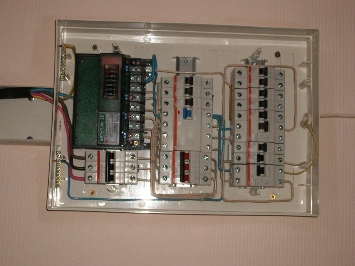
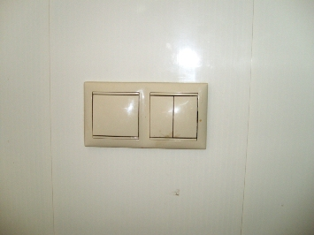

Поменять проводку в квартире.
Качественный электромонтаж в Санкт-Петербурге и ленобласти, стаж 12 лет. Частный электрик, недорого и качественно.
Тел. 8 904 642 08 57 Николай.

Качественная замена и профессиональный ремонт проводки в квартире или в доме.
Цены ниже! Скидки 15 %
Вы решили произвести ремонт либо полноценную замену электропроводки в собственном доме (квартире) в СПБ, но сам процесс представляется для вас непонятным? В этом нет ничего зазорного, ведь далеко не каждый из нас в школьные годы был гением от физики, а все возникающие проблемы с электричеством зачастую перебрасывались либо на отца, либо на хорошего знакомого, более-менее понимающем в данном процессе.
Сколько стоит заменить проводку в квартире?
|
Электромонтаж под ключ. |
Цены в руб. |
|
Однокомнатной. |
30000 |
|
Двухкомнатной. |
40000 |
|
Трёхкомнатной. |
51000 |
|
Электромонтаж кухни под ключ. |
7000 |
|
Ванной комнаты. |
5000 |
|
Поменять розетку, выключатель. |
200 |
|
Электромонтаж комнаты. |
8000 |
Если же необходимость поменять проводку все же стала перед вами ребром, я с радостью готов оказать вам свои услуги. Для проведения подобных действий необходимы специализированные познания и огромная осторожность, коими я обладаю.
Вне зависимости от того, что вы планируете делать – ремонт либо полноценную замену проводки и все к этому прилагаемое, мы совместно обсудим количество необходимых точек в вашей квартире и непосредственно качество самого провода.
Смета на замену проводки в квартире 52 кв. м. по полу.
Можно рассмотреть стандартную двухкомнатную квартиру, средней площадью 52 кв. м.
Вам понадобится около 8 розеток в гостиную комнату – под телевизор, медиаплеер, стереосистему, антенну, телефон, светильники.
Также нужна будет розетка для компьютера, пылесоса, утюга и пр. Во второй, меньшей по площади комнатой, можно ограничиться наличием всего пары розеток – для бытовых приборов и светильника.
Сколько розеток нужно заменить на кухне.
Кухня будет нуждаться в двух и более розетках, в зависимости от используемых приборов – холодильник, телевизор, микроволновая печь, электрочайник, соковыжималка, кухонный комбайн, миксер. Выбор необходимого количества стоит за вами, я могу только посоветовать, как будет комфортнее и более выгодно. Но обязательно нужно будет сместить и углубить розетку под электрическую плиту. В ванной комнате понадобиться герметичная розетка для подключения стиральной машины и одна простая розетка. В коридоре мы сможем ограничиться одной розеткой – для подключения светильника. Среднее количество точек в двухкомнатной квартире колеблется в пределах 30.
После обсуждения всех рабочих моментов, я готов приступить к черновой работе, которая будет заключаться в штроблении стен под розетки, выключатели и саму проводку.
Только после этого я смогу смонтировать подрозетники, установить внутренние части всех розеток и выключателей. В случае если все выше описанное не будет сделано, довольно сложно угадать необходимую глубину для всех выключателей и розеток, есть большая вероятность того, что они будут либо уходить глубоко в стену, либо же наоборот выпирать из нее. Поэтому все необходимо делать в правильном порядке. Только после чистовой отделки стен можно будет закрепить декоративные панели.
Полезно знать!
Проводка большинства старых домов, да и многих современных, выполнена алюминиевым проводом с одинарной изоляцией. Потребляемая мощность, на которую рассчитано сечение подобных проводов, составляет 1-2 к Вт, что актуально разве что для второй половины прошлого века, но никак не для нашего времени.
Давайте вместе подсчитаем:
Телевизор потребляет около 300 Вт, микроволновка – около 1 к Вт, электрический чайник – от 800 до 1500 Вт, обогреватель – не менее 1,5 к Вт. А ведь это далеко не все электроприборы, которые вы намерены использовать в быту. Поэтому и нет ничего удивительного в том, что проводка не выдерживает возлагаемое на нее напряжение. Если в случае перегрузки не сработают автоматы, находящиеся в квартирном щите, то изоляция алюминиевых проводов начнет прогрессивно разрушаться. Подобная ситуация может быть чревата и коротким замыканием. На проводке негативно сказывается и наличие любой влаги, делая алюминий хрупким и ломким.
Максимальный срок эксплуатации такой проводки составляет не более 15-20 лет.
Такая ситуация может повлечь пропадание контакта в розетках, «случайные» выбивания автомата, а простая замена люстры либо выключателя может быть чревата поломкой проводов. Мое мнение в данной ситуации, как специалиста – пора поменять проводку в квартире.
Средняя стоимость замены проводки в СПБ, это 700 р. за 1 кв. м квартиры. Эта сумма не столь велика, поэтому дабы не рисковать жизнью, лучше пригласить для проведения подобных работ меня.
С чего я начну?
На плане квартиры я размечаю расположение всех выключателей и розеток, не забывая о том, что расстояние от них до потолка (пола) должно быть не менее 10 см. Следующим этапом идет расчет нагрузки – это примерная суммарная мощность всех ваших электрических приборов плюс по 100 Вт к каждому прибору. Сумму, которая получилась, следует разделить на 220 (это закон Ома). Такое действие предоставит примерную величину тока, такую, на которую и должна быть рассчитана вся проводка вашей квартиры. Необходимая величина составляет 12-16. А (соответствующее сечение кабеля 1,5 кв. мм), в случае, если полученная величина больше, стоит прокладывать несколько параллельных линий проводки от щита, с отдельным автоматом на каждую линию.
Исходя из плана вашей квартиры, я также рассчитаю, сколько понадобиться кабеля, выключателей и розеток.
Все дальнейшие работы будут проделаны мною лично. Я гарантирую вам качественные, оперативные и материально выгодные услуги касательно замены проводки в вашем жилье.
 Поменять проводку в квартире.
Поменять проводку в квартире. Сколько будут стоить материалы.
Карта сайта.
Замена электропроводки в панельном доме.
Расценки на электропроводку квартир.
Замена проводки в хрущевке.
Электромонтаж в частном доме.
Электрика в загородном доме.
Сколько стоит замена электропроводки в двухкомнатной квартире?.
Сколько стоит проложить проводку в 3 ком квартире?
Сколько стоит проложить проводку в четырех комнатной квартире?
Сколько стоит сделать внутреннюю проводку?.
Стоимость штробление стен.
Установка люстр и светильников.
Замена электропроводки в панельном доме.
Электромонтаж проводов в бане.
Электрика в загородном доме